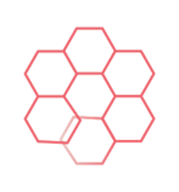

Анкета для отбора в кураторы
Заполните форму ниже. В следующем шаге подключим сбор ответов в Google Таблицу.
После подключения Google Таблицы здесь будет настоящая отправка данных.

Заполните форму ниже. В следующем шаге подключим сбор ответов в Google Таблицу.
После подключения Google Таблицы здесь будет настоящая отправка данных.